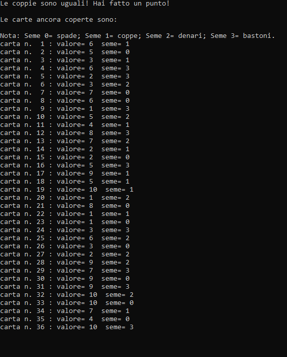

Gioco delle coppie
Come funziona il Programma?
Il programma inizialmente chiede ai due giocatori i loro nomi. Successivamente viene inizializzato l'array di carte, in ordine crescente (da 1 a 10)
e ad ogni decina di carte viene assegnato un seme differente. Il tipo "Carta" è essenzialmente una struct composta dal suo valore e il suo seme.
Il seme è un tipo enumerativo.
Dopo l'inizializzazione dell'array di carte viene stampato ai giocatori l'elenco di carte completo, e viene chiesto loro
di decidere quante volte bisogna mischiare il mazzo.
Per mischiare il mazzo vengono generati due numeri casuali compresi tra 0 e 39 (gli indici effettivi delle carte),
questi due numeri saranno gli indici delle due carte a cui verrà effettuato lo scambio. Poi verrà scelto casualmente un giocatore che inizierà il gioco.
Il giocatore che inizia sceglie le posizioni di due carte, se il valore di queste due carte è uguale allora il giocatore farà un punto, se il loro valore
è diverso il turno verrà cambiato.
Quando uno dei due trova due carte dello stesso valore, le carte successive a quelle scelte verranno scalate di un posto.
Ad ogni turno viene stampato il punteggio di entrambi giocatori e quando le carte sono terminate viene calcolato il punteggio dei giocatori e sarà stampato il nome
del giocatore che avrà più punti e dunque vince la partita.
Test effettuati:
Nei test effettuati, la prima operazione è quella dove viene chiesto ai giocatori di inserire i loro nomi.
_________________________________________________________________________________________________________________________________________________
•Test 1:
Dopo l'inserimento dei nomi dei giocatori, viene stampata a video la lista ordinata delle carte, con una nota per i giocatori dei i semi.
Succesivamente, viene chiesto ai giocatori quante volte deve essere mischiato il mazzo, in questo test viene scelto 10 volte, come possiamo notare nell'immagine a sinistra.
Viene mischiato il mazzo e mostrato a video la lista aggiornata delle carte (immagine a destra).
_________________________________________________________________________________________________________________________________________________
Viene scelto casualmente un giocatore, in questo caso viene scelto "Antonio". Il giocatore deve scegliere due posizioni dal mazzo. "Antonio" sceglie la n.30 e la n.33.
_________________________________________________________________________________________________________________________________________________
Le carte sono uguali e viengono tolte dal mazzo le coppie scelte da "Antonio" e vengono messe in un'altra lista, questa lista è stampata subito dopo.
Viene aggiornato il punteggio e mostrato ai giocatori. Il turno è ancora di "Antonio" e sceglie le posizioni n.6 e n.17.
Le carte sono diverse e il turno cambia. E' il turno di "Roberto", e sceglie le carte n.16 e n.32.
_________________________________________________________________________________________________________________________________________________

"Roberto" trova le carte uguali e fa punto, vengono tolte nuovamente le carte scelte e messe nel mazzo di carte scoperte. Vengono stampati i punteggi
aggiornati e il turno resta a lui. Il giocatore sbaglia a digitare (sceglie la posizione 300, che non esiste) e viene chiesto di ripetere l'operazione.
"Roberto" sceglie le carte n.30 e n.31. Il gioco continua fin quando le carte finiscono, dunque il gioco finisce.
_________________________________________________________________________________________________________________________________________________
Seguirà un calcolo dei punteggi e verrà stampato il nome del vincitore. In questo test vince "Antonio".
____________________________________________________________________________________________
•Test 2:
Dopo l'inserimento dei nomi dei giocatori, è stampata la lista ordinata delle carte (immagine a sinistra).
Poi viene chiesto ai giocatori quante volte deve essere mischiato il mazzo, in questo test viene scelto 100 volte.
Viene mischiato il mazzo e mostrato a video la lista aggiornata delle carte (immagine a destra).
_________________________________________________________________________________________________________________________________________________
In questo test viene scelto per prima "Roberto". Il giocatore deve scegliere due posizioni dal mazzo. "Antonio" sceglie la n.36 e la n.20.
In questo caso viene mostrato la possibilità di scegliere come primo indice quello maggiore, e come secondo quello minore.
_________________________________________________________________________________________________________________________________________________
Le coppie coincidono quindi il giocatore fa punto. Le coppie vengono messe nel mazzo scartato,quest'ultimo, in seguito è mostrato a video.
Dopo viengono stampati i punteggi. Queste operazioni vengono ripetute fin quando le carte finiscono e un giocatore vince.
_________________________________________________________________________________________________________________________________________________
Dopo il calcolo del punteggio, viene riscontrato un pareggio, questa volta nessun vincitore!
____________________________________________________________________________________________
•Test 3:
Nell'immagine a sinistra notiamo la stampa a video della lista ordinata del mazzo di carte, effettuata dopo l'inserimento del nome dei giocatori.
Successivamente viene chiesto ai giocatori quante volte deve essere mischiato il mazzo, in questo test viene scelto 1000 volte.
Nell'immagine a destra invece viene mostrato il mazzo mischiato e mostrato.
_________________________________________________________________________________________________________________________________________________
Viene scelto casualemente "Antonio" come giocatore che inizierà per primo il gioco. "Antonio" sceglie la n.14 e la n.28.
_________________________________________________________________________________________________________________________________________________
Il giocatore fa punto. Le coppie vengono messe nel mazzo scartato, e vengono mostrati i mazzi.
I punteggi dei giocatori vengono aggiornati e il gioco continua.
_________________________________________________________________________________________________________________________________________________
In questo terzo test, il vincitore è "Roberto", come mostrato nell'immagine, viene stampato il suo nome.
____________________________________________________________________________________________
Il codice sorgente:
•Librerie, variabili globali, struct e prototipi delle funzioni:
Le librerie utilizzate da questo programma sono le due librerie standard, e la libreria time.h utilizzata per generare numeri casuali.
Viene definito un nuovo tipo enumerativo per i semi delle carte, e viene definita una struct per le carte, questa struct è composta dal valore (che assume la carta) e dal seme.
Viene dichiarata una variabile puntatore globale, questo puntatore "punterà" ad un tipo Carta. In seguito vengono elencati i prototipi delle function e procedure.
_________________________________________________________________________________________________________________________________________________
•Main:
Nel Main vengono dichiarate le principali variabili, come ad esempio l'array di Carte per il mazzo da carte, le due variabili di tipo char per i nomi dei giocatori.
All'interno del Main troviamo l'inizializzazione del seme per la function rand.
Dopo avviene l'inserimento dei nomi dei giocatori e poi viene richiamata la procedura di riempimento del mazzo di carte, e della stampa di esso.
Poi viene chiesto quante volte mischiare il mazzo ai giocatori e viene avviata la procedura che scambia le carte.
Viene generato il turno casualemente tramite la function "scelta turno".
Viene inizializzata la variabile vincitore con il risultato della function "gioco coppie" che è il function principale del programma, infine con la procedura "stampa_vincitore" viene stampato il nome del vincitore in base al valore assunto dalla variabile inizializzata precedentemente.
_________________________________________________________________________________________________________________________________________________
•Riempi mazzo:
La procedura Riempi mazzo, riempie in ordine crescente il mazzo di carte, ad ogni decina di carte assegna un seme napoletano diverso.
Al suo interno troviamo un ciclo for che va da 0 fino al numero di carte (40); all'interno del ciclo for ci sono una serie di costrutti if:
il primo controlla quando il contatore del ciclo arriva alla decima carta così da far ripartire il valore da assegnare alla carta ad 1.
I costrutti di selezione successivi controllano il valore del contatore in modo da assegnare il giusto seme ad ogni decina di carte.
_________________________________________________________________________________________________________________________________________________
•Stampa mazzo:
Questa procedura è utilizzata per stampare a video il mazzo di carte con il relativo seme. Il programma utilizza questa procedura molte volte:
sia per il mazzo ordinato, sia per il mazzo mischiato, ma anche per il mazzo di carte scoperte.
Il numero di carte da stampare viene passato al momento della chiamata della procedura. Il costrutto principale di questa procedura è il ciclo for, utilizzato per ripetere per il numero di carte passato alla procedura la stampa a video dell'array di carte.
_________________________________________________________________________________________________________________________________________________
•Mischia mazzo:
L'immagine mostra l'algoritmo che mischia il mazzo di carte. L'algoritmo consiste in due costrutti di ripetizione:
il ciclo esterno è un ciclo for, quante volte deve essere ripetuto lo decide l'utente.
Il ciclo interno è un ciclo while che viene ripetuto per il numero di carte. L'algoritmo consiste di generare due numeri casuali,
questi due numeri saranno gli indici delle due carte con cui si effettuerà lo scambio.
_________________________________________________________________________________________________________________________________________________
•Scelta turno:
La function in questione sceglie casualmente chi dei due giocatori inizia il gioco. Genera un numero casuale tra 1 e 2,
se il numero generato è 1 inizierà il giocatore n.1 altrimenti inizierà il giocatore n.2.
La function ritorna il numero casuale, in modo che viene memorizzato quale dei due giocatori inizia il turno.
_________________________________________________________________________________________________________________________________________________
•Gioco Coppie:
La function "gioco_coppie" è la procedura più grande del programma, il costrutto principale è un costrutto while, che ripete il gioco,
cioè tutte le operazioni al suo interno, fino a quando le carte del mazzo non finiscono. In base al turno del giocatore viene chiesto di inserire a quest'ultimo
le posizioni delle carte, e viene effettuato un controllo sui valori inseriti.
Il costrutto di selezione controlla se i valori delle carte scelte dal giocatore sono uguali, viene incrementato il punteggio del giocatore.
Le due carte vengono messe in un secondo array di Carte (mazzo_scoperto).Viene eseguita la procedura "escludi carta" che verrà spiegata successivamente.
Il numero di carte scoperte è incrementato di due mentre il numero di carte del mazzo napoletano decrementato di due.
Successivamente vengono stampati tramite l'utilizzo della procedura "stampa_mazzo" sia il mazzo napoletano con le coppie escluse, sia il mazzo di carte scoperte. Alla fine del costrutto if viene stampato il punteggio dei giocatori aggiornato.
Se invece le carte sono diverse, viene mostrato il massaggio al giocatore. Con l'utilizzo della function "cambio_turno" viene passato il turno al giocatore successivo (verrà spiegata nel particolare in seguito).
Alla fine della function "gioco_coppie" troviamo un ultimo costrutto di selezione, che in base a quale giocatore possiede il punteggio maggiore, verrà ritornato un valore compreso tra 1 e 2. In caso di parità verrà tornato il valore 0.
_________________________________________________________________________________________________________________________________________________
•Escludi carta:
L'immagine mostra la procedura che esclude le coppie scelte dal giocatore durante il gioco. Consiste in due cicli while, inseriti all'interno di un costrutto
if-then-else, che controlla quale dei due indici è quello maggiore.
Il primo ciclo, viene eseguito dalla carta dell'indice minore scelto dal giocatore, fino all'indice maggiore e vengono "shiftati" di un posto indietro le carte.
Il secondo costrutto va dall'indice maggiore fino all'ultima carta del mazzo; vengono spostate le carte di un posto indietro.
_________________________________________________________________________________________________________________________________________________
•Cambio turno:
Questa function cambia effetivamente il turno del giocatore. Se il turno precedente era quello del giocatore 1, assegna alla variabile "turno_giocatore" il valore 2,
o viceversa. La function ritorna il valore del turno aggiornato.
_________________________________________________________________________________________________________________________________________________
•Stampa vincitore:
L'ultima procedura del programma, stampa il nome del vincitore a video. Semplicemente controlla il valore ritornato dalla function "gioco_coppie".
Se il valore è zero, stampa che c'è stato un pareggio, altrimenti controlla quale dei due giocatori ha vinto.
Tocca il Logo per tornare su!
____________________________________________________________________________________________